library(tidyverse)
options(scipen = 10) # set scientific notation to turns on after more digitsLab - Conflicts over resources: the case of Chile and Peru
Overview
In the following lab, you will answer some questions and create two new plots.
Background
How do we feed so many people on this planet anyway? The Haber Process 5 min of podcast, ‘how-do-you-solve-problem-fritz-haber’
In 1879–1883, Chile and Peru fought a war a resource. What is the name of that war and what resource was involved? What other country was involved? Not sure? You can search the web for this answer.
Answers here…
Why aren’t these countries fighting over the same resource as they were in late 1800s?
Answer based on pod cast…
More recently a case was brought to the ICJ again over resources. In a few sentences summarize the dispute. Reference: https://www.icj-cij.org/en/case/137
You answer here …
Now, check out the maps in the judgement: https://www.icj-cij.org/files/case-related/137/137-20140127-JUD-01-00-EN.pdf In these maps, the water is colored blue. Now, what color is the land?
Your answer here…
How are the maps used to illuminate the dispute and ICJ’s resolution of the dispute? Which pages of the document contain these two maps?
Your answer here…
Beyond fishing, name a one commodity for Chile’s and one of Peru’s of great importance for each state’s economy. You may search the web!
Your answer here …
The data and existing plots
Fisheries and Aquaculture Department of the Food and Agriculture Organization of the United Nations collects data on fisheries production of countries. This Wikipedia page lists fishery production of countries for 2005. For each country tonnage from capture and aquaculture are listed. Note that countries which harvested less than 100,000 tons are not included in the data. The source data can be found in the fisheries dataset in the dsbox package. The following plots were produced based off the data given on the Wikipedia page.
Given below, are existing data visualizations that violate many data visualization best practices. Describe some problems.
Your answer here…

Reading in the data
Your visualization will give important context to the ICJ case. You will use the same data as used in the visualizations above, but will create less problamatic visualizations!
Install packages
Importing data
Some data cleaning has been done for you in the code below - from an html table (data in the wild). Check out the walk through here:
Describe one or two new-to-you data cleaning “moves” that you see in this ‘pipeline’:
your answer
Name a cleaning/manipulation move that we saw last class:
your answer
Purposeful data manipulation
library(countrycode)
clean_csv_url <- "https://raw.githubusercontent.com/tidyverse/datascience-box/f807e7835d456e63ab45a39c931003655dc5ce48/course-materials/lab-instructions/lab-06/data/fisheries.csv"
read_csv(clean_csv_url) # A tibble: 216 × 4
country capture aquaculture total
<chr> <dbl> <dbl> <dbl>
1 Afghanistan 1000 1200 2200
2 Albania 7886 950 8836
3 Algeria 95000 1361 96361
4 American Samoa 3047 20 3067
5 Andorra 0 0 0
6 Angola 486490 655 487145
7 Antigua and Barbuda 3000 10 3010
8 Argentina 755226 3673 758899
9 Armenia 3758 16381 20139
10 Aruba 142 0 142
# ℹ 206 more rowsfisheries <- read_csv(clean_csv_url) |>
mutate(region = countrycode(
sourcevar = country,
origin = "country.name",
dest = "region")) |>
mutate(region = ifelse(country == "Jersey and Guernsey",
"Europe & Central Asia",
region)) |>
select(country, region, everything())What does the countrycode() function from the countrycode package seem to do when the input (‘origin’) is a country name and the output (‘dest’) is region?
your answer here
The countrycode function failed to classify every country into a region, so we use an ifelse() function to fill in the region manually. Based on this last mutate move (or your previous knowledge), where in the world is Jersey and Guernsey?
your answer here
Consult the following chunk for questions that follow.
fisheries |>
distinct(region)# A tibble: 7 × 1
region
<chr>
1 South Asia
2 Europe & Central Asia
3 Middle East & North Africa
4 East Asia & Pacific
5 Sub-Saharan Africa
6 Latin America & Caribbean
7 North America Executing the code above, which uses distinct. How many regions are there?
answer here
Now change out distinct with count above, and execute the code again. How many observations in our fisheries data are classified as being in “North America”.
answer here
Mentally, guess what the North American countries those are, and modify the code below to check those assumptions.
fisheries |>
filter(region == "Europe & Central Asia") ## Change the filtering to check on North America# A tibble: 58 × 5
country region capture aquaculture total
<chr> <chr> <dbl> <dbl> <dbl>
1 Albania Europe & Central Asia 7886 950 8836
2 Andorra Europe & Central Asia 0 0 0
3 Armenia Europe & Central Asia 3758 16381 20139
4 Austria Europe & Central Asia 350 3483 3833
5 Azerbaijan Europe & Central Asia 676 640 1316
6 Belarus Europe & Central Asia 686 11199 11885
7 Belgium Europe & Central Asia 26970 44 27014
8 Bosnia and Herzegovina Europe & Central Asia 305 4564 4869
9 Bulgaria Europe & Central Asia 8614 15762 24376
10 Croatia Europe & Central Asia 72312 15805 88117
# ℹ 48 more rowsWhat are the North American Countries?
answer here
Some wrangling practice/exercises
Target #1
In the code chunk below, select only the country and capture variables
fisheries# A tibble: 216 × 5
country region capture aquaculture total
<chr> <chr> <dbl> <dbl> <dbl>
1 Afghanistan South Asia 1000 1200 2200
2 Albania Europe & Central Asia 7886 950 8836
3 Algeria Middle East & North Africa 95000 1361 96361
4 American Samoa East Asia & Pacific 3047 20 3067
5 Andorra Europe & Central Asia 0 0 0
6 Angola Sub-Saharan Africa 486490 655 487145
7 Antigua and Barbuda Latin America & Caribbean 3000 10 3010
8 Argentina Latin America & Caribbean 755226 3673 758899
9 Armenia Europe & Central Asia 3758 16381 20139
10 Aruba Latin America & Caribbean 142 0 142
# ℹ 206 more rowsTarget #2
filter() to the rows where total is zero (remember == is for conditions, and = is for assignment.
fisheries # A tibble: 216 × 5
country region capture aquaculture total
<chr> <chr> <dbl> <dbl> <dbl>
1 Afghanistan South Asia 1000 1200 2200
2 Albania Europe & Central Asia 7886 950 8836
3 Algeria Middle East & North Africa 95000 1361 96361
4 American Samoa East Asia & Pacific 3047 20 3067
5 Andorra Europe & Central Asia 0 0 0
6 Angola Sub-Saharan Africa 486490 655 487145
7 Antigua and Barbuda Latin America & Caribbean 3000 10 3010
8 Argentina Latin America & Caribbean 755226 3673 758899
9 Armenia Europe & Central Asia 3758 16381 20139
10 Aruba Latin America & Caribbean 142 0 142
# ℹ 206 more rowsWhich countries have zero fish production via aquaculture or capture?
Your answer here
Target #3
Now, use filter_out() to drop cases where total is zero. (Note: We didn’t see filter_out on Monday…)
fisheries # A tibble: 216 × 5
country region capture aquaculture total
<chr> <chr> <dbl> <dbl> <dbl>
1 Afghanistan South Asia 1000 1200 2200
2 Albania Europe & Central Asia 7886 950 8836
3 Algeria Middle East & North Africa 95000 1361 96361
4 American Samoa East Asia & Pacific 3047 20 3067
5 Andorra Europe & Central Asia 0 0 0
6 Angola Sub-Saharan Africa 486490 655 487145
7 Antigua and Barbuda Latin America & Caribbean 3000 10 3010
8 Argentina Latin America & Caribbean 755226 3673 758899
9 Armenia Europe & Central Asia 3758 16381 20139
10 Aruba Latin America & Caribbean 142 0 142
# ℹ 206 more rowsTarget #4
Using mutate(), create a new variable my_total that sums aquaculture and capture. Inspect that this is the same as the fisheries dataset total.
fisheries# A tibble: 216 × 5
country region capture aquaculture total
<chr> <chr> <dbl> <dbl> <dbl>
1 Afghanistan South Asia 1000 1200 2200
2 Albania Europe & Central Asia 7886 950 8836
3 Algeria Middle East & North Africa 95000 1361 96361
4 American Samoa East Asia & Pacific 3047 20 3067
5 Andorra Europe & Central Asia 0 0 0
6 Angola Sub-Saharan Africa 486490 655 487145
7 Antigua and Barbuda Latin America & Caribbean 3000 10 3010
8 Argentina Latin America & Caribbean 755226 3673 758899
9 Armenia Europe & Central Asia 3758 16381 20139
10 Aruba Latin America & Caribbean 142 0 142
# ℹ 206 more rowsHint, refer to the following code, if you need help:
fisheries |>
mutate(capture_twice = capture + capture)Target #5
Modify the code to calculate not only the min and max capture by region, but also the mean.
fisheries |>
group_by(region) |>
summarise(
min_capture = min(capture),
max_capture = max(capture)
)# A tibble: 7 × 3
region min_capture max_capture
<chr> <dbl> <dbl>
1 East Asia & Pacific 15 17800000
2 Europe & Central Asia 0 4773413
3 Latin America & Caribbean 125 3811802
4 Middle East & North Africa 873 1454105
5 North America 410 4931017
6 South Asia 7 5082332
7 Sub-Saharan Africa 38 734731Target #6: Optional, construct the data manipulation pipeline that answers the question, considering only countries that have non-zero total capture or aquaculture, what is the regional mean total seafood production?
Visualization
Univariate

Use a univarariate visualization type to show the three continuous variables, capture, aquaculture, and total, e.g. geom_rug(), geom_histogram()…
ggplot(fisheries) + # add an appropriate univariate geom
aes(x = capture)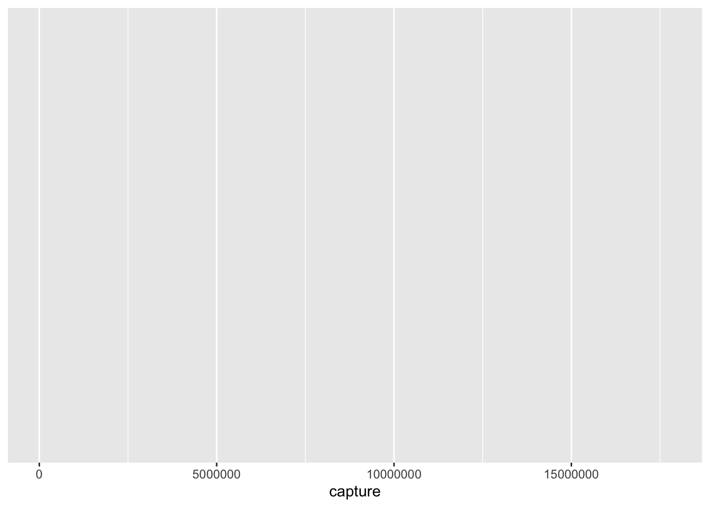
ggplot(fisheries) + # add an appropriate univariate geom
aes(x = aquaculture)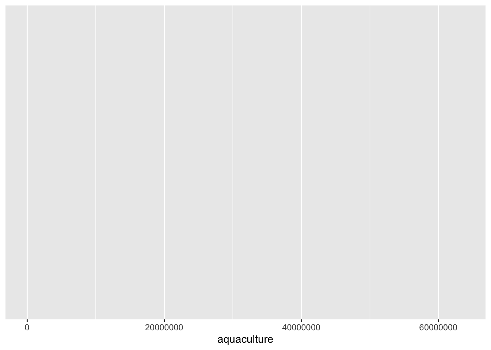
ggplot(fisheries) + # add an appropriate univariate geom
aes(x = total)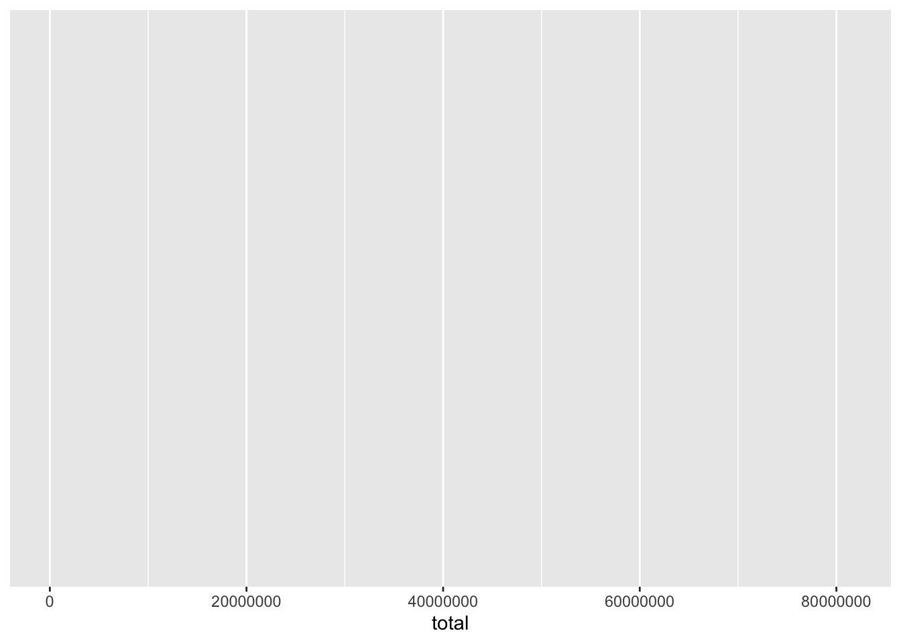
Chose one of these plots types, and apply it to the base plot below - which this time has regional facets.
ggplot(fisheries) + # add an appropriate univariate geom
aes(x = total/1000000) +
facet_wrap(facet = vars(region))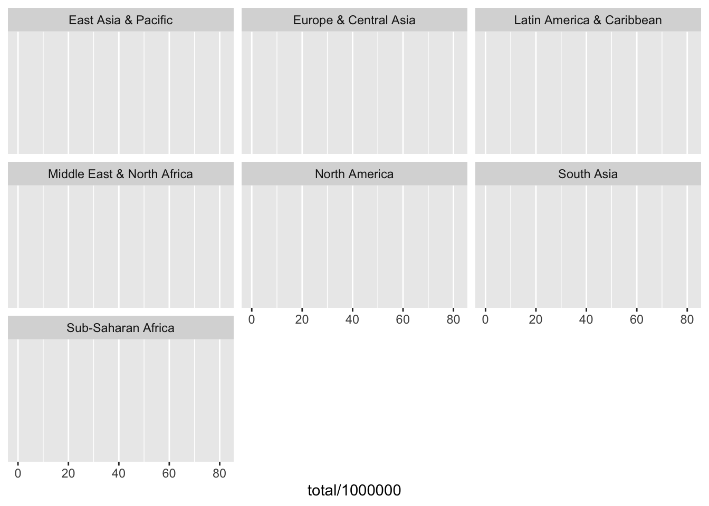
Bivariate: discrete X continuous
add an apropriate geom: geom_boxplot(), geom_violin(), geom_jitter(height = .2, width = 0)

ggplot(fisheries) +
aes(y = region, # orientation changed
x = capture)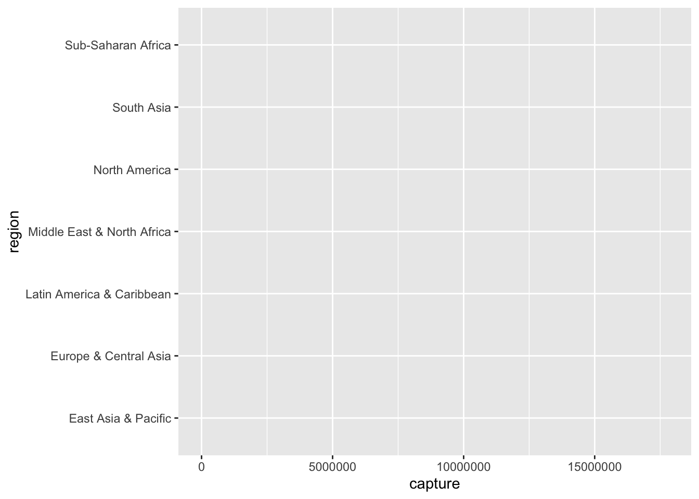
ggplot(fisheries) +
aes(y = region, # orientation changed
x = aquaculture)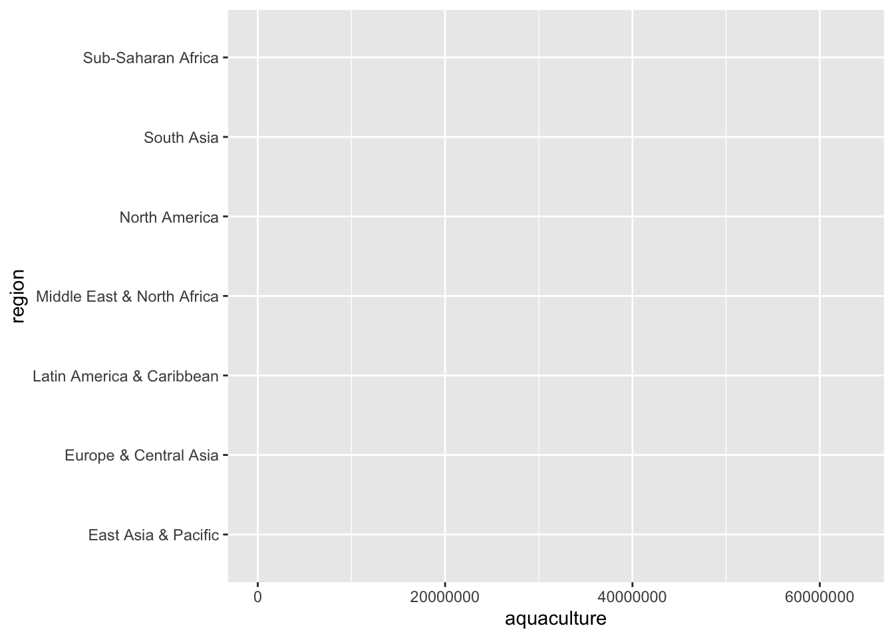
ggplot(fisheries) +
aes(y = region, # orientation changed
x = total)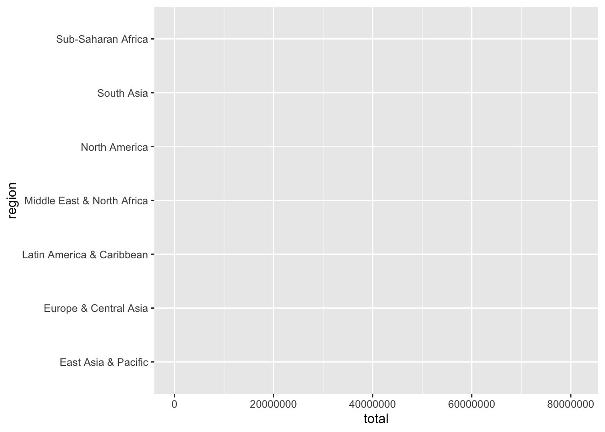
Bivariate, Continuous X Continuous
To the plot below…
- add the appropriate geom to create a scatter plot… (ask a neighbor if you don’t remember)
- add to the aesthetic mapping (x and y are now specified, add color and map the variable ‘total’ to it)
- add
scale_x_log10()to the plot - add
scale_y_log10() - add
geom_smooth() - add
geom_smooth(method = lm)
How do the different smooth specifications differ?
fisheries |>
mutate(peru_or_chile =
country %in% c("Peru", "Chile")) |>
ggplot() +
aes(x = capture,
y = aquaculture)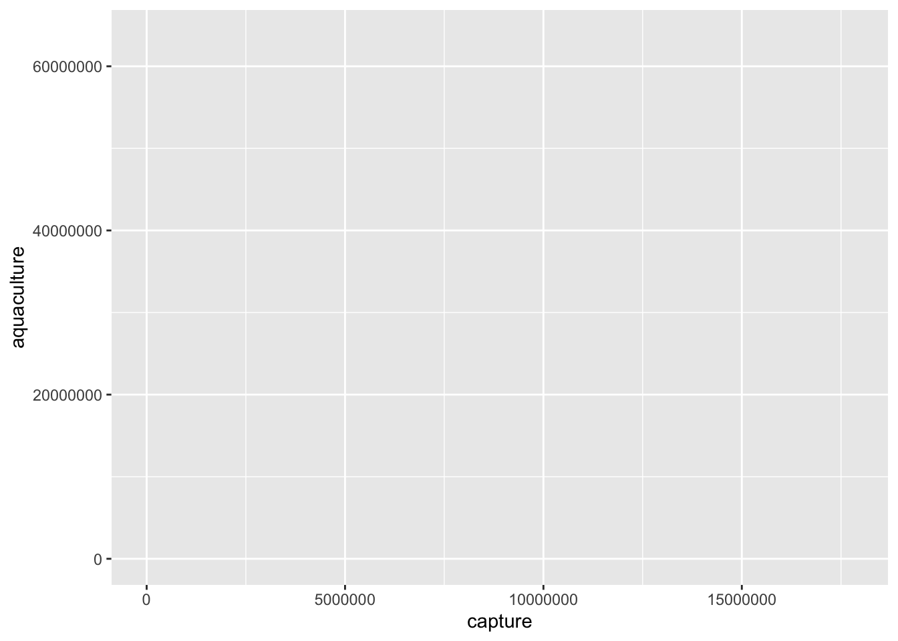

Final exercises: Observations
Data reshaping
Look at the code below… How is the data transformed to get to fisheries_longer? What happened to the total column? What happened to the capture and aquaculture data?
your response here
fisheries_longer <- fisheries |>
select(-total) |>
pivot_longer(cols = capture:aquaculture,
names_to = "type",
values_to = "amount")
fisheries_longer# A tibble: 432 × 4
country region type amount
<chr> <chr> <chr> <dbl>
1 Afghanistan South Asia capture 1000
2 Afghanistan South Asia aquaculture 1200
3 Albania Europe & Central Asia capture 7886
4 Albania Europe & Central Asia aquaculture 950
5 Algeria Middle East & North Africa capture 95000
6 Algeria Middle East & North Africa aquaculture 1361
7 American Samoa East Asia & Pacific capture 3047
8 American Samoa East Asia & Pacific aquaculture 20
9 Andorra Europe & Central Asia capture 0
10 Andorra Europe & Central Asia aquaculture 0
# ℹ 422 more rowsIn the figure below, there are two ‘layers’ that compose the ‘dumbbell’ chart. What are they?
your answer here
Is the color “plum3” a local declaration or global. Ask a neighbor if you are not sure or if the question is unclear.
fisheries_longer |>
filter(region == "Latin America & Caribbean") |>
ggplot() +
geom_line(color = "plum3", show.legend = F) +
aes(x = amount,
y = country |> reorder(amount)) +
geom_point() +
aes(color = type)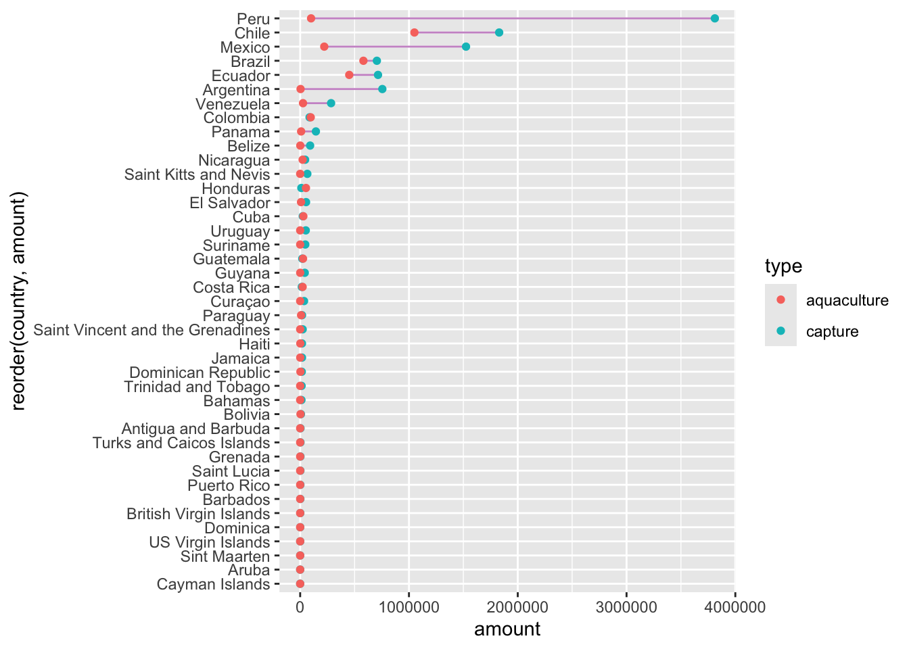
last_plot() +
scale_color_manual(values = c("plum1", "plum4"))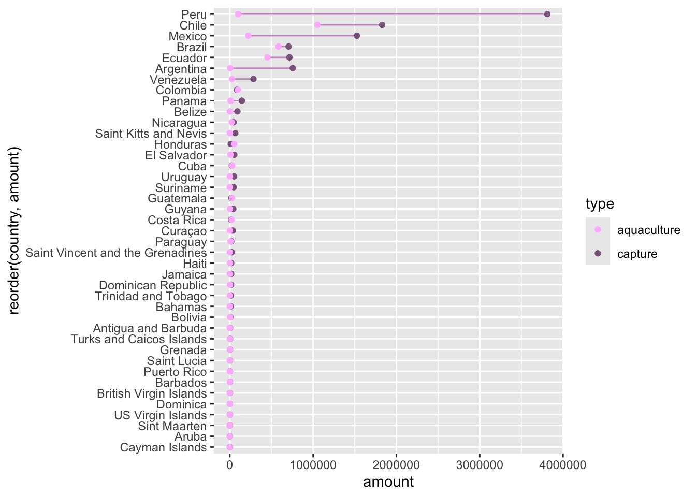
Using text to label points
For specificity, we can also label points, using geom_label() or geom_text(), as in the plot that follows.
Look at the plot and consider Chile and Peru. Which country is stronger in aquaculture (farmed fish), and which in capture (wild)? > your response here
fisheries |>
filter(region == "Latin America & Caribbean") |>
ggplot() +
aes(x = capture, y = aquaculture) +
geom_point() +
aes(label = country) +
geom_label(hjust = "outward", # << geom label
yjust = "outward") +
geom_smooth(method = "lm") +
scale_x_log10() +
scale_y_log10() +
labs(title = "Capture v. Aquaculture in Latin America & Caribbean")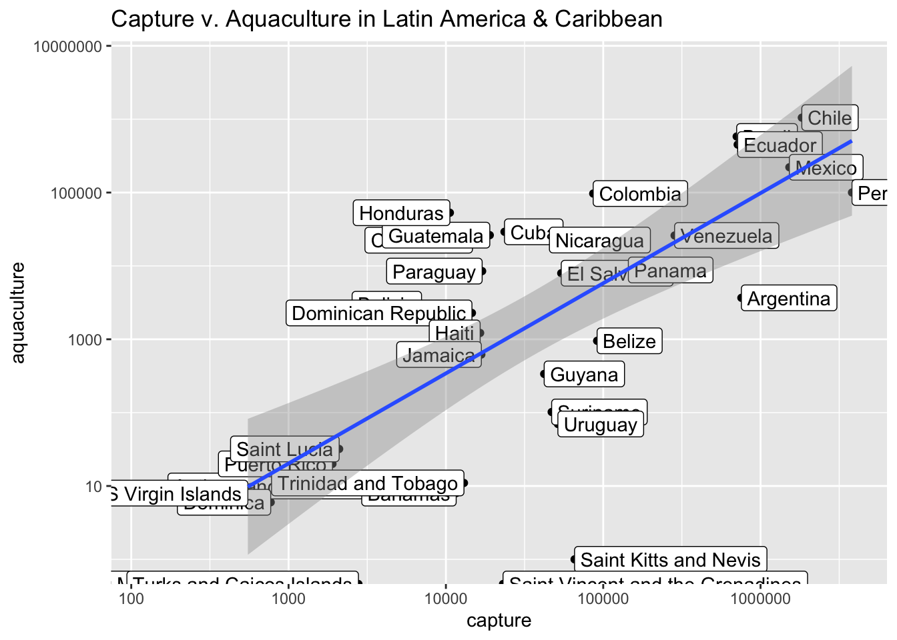
- Answer the question: How else might you modify this plot to improve it? (Your discussion doesn’t need to be limited to your ggplot knowledge)
Your answer here …
Getting help
You are also welcomed to discuss the homework with each other broadly (no copy, paste code sharing!).
Grading
In addition to accuracy of your answers to questions, your submission will be evaluated for
- coding style,
- document organization, and
- quality of writing and grammar.
More ugly charts
Want to see more ugly charts?
Acknowledgements
These exercises were originally created by Angela Zoss and Eric Monson; they have been substantial reworked to have an IR focus by Evangeline Reynolds.